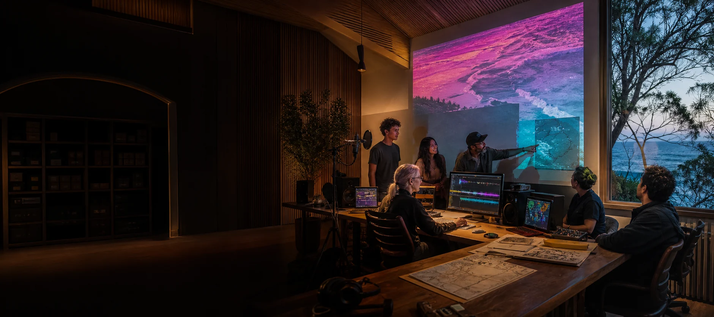

Who is connected to it?
A file may carry individual, family, organisational, community and cultural relationships at once.

A cultural compute node begins with people, context and boundaries. Computation enters only where a relationship gives it a legitimate, specific and reversible role.
Indigenous and non-Indigenous participation does not imply one combined knowledge pool. Different people, families, organisations and cultural groups may hold different rights, responsibilities and expectations.
Technology does not grant sovereignty.
It either respects existing authority and relationship boundaries or cuts across them.
Storage is not permission.
Possessing a file does not establish a right to train, publish, combine or retain it.
Connection is not sameness.
Nodes may exchange selected outputs while keeping their own protocols, names and centres.
A file may carry individual, family, organisational, community and cultural relationships at once.
Viewing, preserving, teaching, transcribing and model training are separate uses.
Local storage, backups, logs, temporary copies and external services all matter.
Access decisions, changes and exports need a history that relevant people understand.
Review dates, withdrawal pathways and deletion limits belong in the first conversation.
Not every valuable relationship or form of knowledge belongs in a machine.
This website does not replace protocols developed by Indigenous data-sovereignty and ethical-research communities. These links offer starting points for locally chosen discussion and qualified guidance.